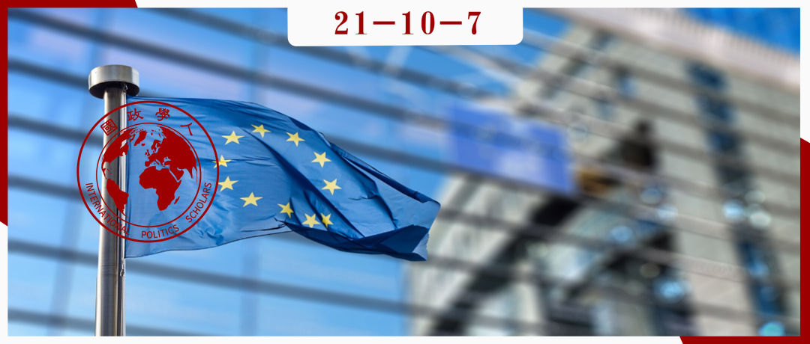

收录于合集 #国际组织 4个

作品简介
作者： Jens Blom‐Hansen，丹麦奥胡斯大学政治学系教授。
编译： 谭伟业（国政学人编译员，中国人民大学国际关系专业硕士生）
来源： Blom‐Hansen, J., & Senninger, R. (2021). The Commission in EU Policy Preparation. JCMS: Journal of Common Market Studies , 59(3), 625-642.
归档： 《国际关系前沿》2021年第10期，总第37期。

摘要
自经历了雅克·德洛尔（Jacques Delors）时代的鼎盛时期之后，欧盟委员会（以下称“委员会”）便受到了各种挑战：欧洲理事会崛起、欧洲议会被赋权以及各种欧盟机构得以创设。尽管许多学者同意弱化委员会这一趋势，但对委员会地位下降的程度则持有不同看法；许多研究（包括本文）认为地位下降的程度有限。文章尤其聚焦委员会作为立法与行政条例（执行行为和授权行为）制定者的角色。虽然需要经过复杂的机构间程序才能最终通过这些条例，但委员会在所有程序中都享有创制权。 文章调查了委员会如何利用这种先发优势影响欧盟政策。 文章首先建立了一个框架来了解该先发优势所带来的战略选择，之后通过分析十个选定的委员会提案进行实证说明。
文章导读
引言
随着欧洲理事会崛起，欧洲议会被赋予更多权力，新监管机构建立以及欧洲怀疑论者数量增加，一些学者得出结论：欧盟委员会的地位正在下降。这一衰落论在新政府间主义的著作中尤为突出。这种观点认为：自《马斯特里赫特条约》以来，成员国更愿意绕过委员会，并通过创设新机构以超越传统共同体的方法通过欧洲理事会实施政策。但也有许多学者研究认为，下降的程度是有限的，委员会的职能实际上得到了加强。
作者发现，尽管与早期相比，欧盟立法活动有所减少，但欧盟体系的条例输出仍然非常频繁。每年欧盟通过的立法行为（legislative acts）达100件左右，授权行为（delegated acts）达200件左右，实施行为（implementing acts）达1000多件。这些行为都有一个共同之处，即委员会享有创制权。文章旨在通过关注委员会作为规则制定者的角色，研究委员会如何利用创制权这一先发优势引导欧盟政策朝着理想的方向发展。
文章的结构如下：首先，详细介绍委员会在立法和行政领域创制权的具体内容；其次，讨论为什么委员会有可能利用自己的创制权塑造欧盟规则；第三，建立分析框架以理解欧盟委员会会采取何种策略制定欧盟规则；第四，基于访谈和对十个政策准备案例的实证分析，说明这一框架的有效性；最后，讨论研究结果的意义，并指出未来研究的方向。
01
委员会的创制权
基于《欧洲联盟条约》第17条，委员会在立法领域拥有提议和起草立法的权利。这种权利只受到两方面的限制：第一是在自由、安全和司法领域，可以由四分之一的成员国提出立法；第二是理事会和议会都可以要求委员会提出立法建议。然而，《里斯本条约》明确规定，欧盟委员会可以不必对此类请求采取行动，只需解释理由即可。因此委员会传统的创制权完好无损。 创制权还意味着，委员会如果认为维持现状比安理会和议会所能接受的变化更好，就可以不提出立法建议。因此，在欧盟立法过程中，创制权也相当于预先否决权。 此外，委员会在某些情况下也有潜在修正法案的权利和撤回提案的权利。
在行政领域，委员会经常被授予发布行政条例的权力。立法往往只是设定宽泛的目标，具体的执行规则通过委员会制定实施行为或授权行为确定细节。无论是哪种法案程序，理事会和议会都没有修改的权利，而只有同意或否决的权利。
02
欧盟委员会是否有兴趣影响欧盟规则？
作者认为大部分学者对委员会形象的理解都有一个共同的特点，即委员会不是一个中立的行动者，而是一个需要追求、保护和发展的自身利益的行动者。 尤其是在世纪之交，委员会经历了一个“总统化”和“政治化”的过程后，这种特质变得更加明显。 因此，欧盟委员会并不是无私中立的参与者，很可能试图利用创制权塑造欧盟规则。
03
欧盟委员会如何利用创制权制定欧盟规则？
策略一：整顿内部秩序使得委员会内部总司相互协作
委员会是一个支离破碎的组织，这在最高层，即委员团（College）尤为明显。委员们在上任时不一定认识彼此，也不一定被任何党派组织或共同的意识形态捆绑在一起，也不一定在上任后就有共同的目标。不仅高层会出现碎片化，在行政层面也很明显，委员会被分为了50多个总司和服务部门。但是，减少这种碎片化是很困难的，因为欧盟条约没有规定委员会的行政组织，包括总司的数量及其人员分工；原则上行政组织由委员会主席和实际需要来决定。
公共行政方面的文献表明，协调工作在依赖于组织内部的垂直结构导向而非跨组织的协调合作的情况下效果达到最佳。因此，为了能够有效追求其利益，委员会有可能会将沟通协商嵌入垂直结构，即在垂直等级结构下达成协调。在过去这可能很困难；然而在过去几十年的改革中， 委员会分裂在逐步减少，权力逐渐集中 。这主要表现为以下三个方面：1）条约修改增加了委员会主席的正式权力；2）委员会主席通过任命副主席为“超级委员”，在委员团内部创建了一个非正式等级制度；3）在行政一级，委员会总秘书处已转变为主席的私人秘书处，其规模在不断扩大，同时还设立了监管审查委员会，有权组织总司向委员团提交提议。在文献中，这种权力的逐渐中央化被称为委员会的“总统化”。
策略二：探索政治操作空间以预测欧盟理事会和欧洲议会的偏好
鉴于立法和行政领域的提案都需要立法机关（即欧盟理事会和欧洲议会）最终批准，因此委员会的政治操作空间取决于这两个机构的接受程度。因此，委员会希望试探自己有多少政治空间，从战略上制定新的提议，使得这些提议即尽可能符合自身利益，又为理事会和议会所接受。
就理事会而言，委员会和理事会之间的对话有非常完善的制度。 委员会有一个与成员国及其行政部分互动的全方面系统，也被称为“欧洲行政空间（European administrative space）”，该空间由多个要素组成。 首先，成员国官员通过借调国内专家，在组织上融入委员会，这就确保了成员国专家在委员会内的永久存在；第二，委员会设立的咨询机构（即专家组），几乎无一例外都有来自相关国家部委或机构的代表；第三，立法委员会系统就是委员会与成员国代表之间互动的执行委员会系统；第四，欧盟理事会的筹备机构——常设技术委员会——都包括来自委员会的代表；第五，几乎所有欧洲跨国监管和行政网络都包含欧盟委员会及负责执行欧盟政策的国家部委或机构；最后，对于过去二十到三十年间创建的所有欧盟机构的管理委员会，都有欧盟委员会与成员国代表参与。
相比之下，委员会与议会之间的定期接触则几乎没有制度化的场所。但在高层和行政级别的层次中，委员会与议会工作人员也建立了一些非正式的日常关系。
策略三：与新提案背后的利益相关方建立强有力的联盟
多年的研究表明，利益集团是欧盟政治的重要参与者。又鉴于委员会享有创制权，委员会自然成为了利益集团游说的对象。但作者认为这个过程并非是单向性的，委员会同样可以利用利益集团，寻找通过它们与理事会和议会打交道的机会。
此外作者还指出，委员会所处的制度环境鼓励委员会与利益相关方进行对话。《欧洲联盟条约》第11条为委员会规定了一项一般义务，即“与有关各方进行广泛磋商”，具体到各个政策领域还有更细致的磋商要求。同时，在过去十五到二十年里，委员会一直在追求“更好的监管议程”。这一议程其中的一个组成部分就是要改进与利益相关方的磋商，这使得委员会在同理事会与议会打交道时可能会寻找有用的盟友。
总之，作者认为委员会似乎有办法影响围绕其政策形成的联盟的性质和规模。 由于委员会享有的创制权，委员会可以影响一个联盟包罗的范围，以及在政策制定过程中联盟施加影响的时机。 作者认为这一政治工具非常关键。
策略四：操纵机构，利用欧盟错综复杂的程序影响决策过程和结果
作者列举了三个例子来说明委员会如何利用制度操纵决策。第一个例子是委员会通过战略性地制定立法提议，使得这些提议能够被理事会和议会中的大多数人接受。作者引用了波拉克（Pollack）的观点，认为 当行为体可以为政治决策设定议程时，该行为体就不仅仅可以通过正式的权力实现，还可以通过确定主题和提出能够凝聚共识的建议等非正式方式操纵议程 。第二个例子是委员会拥有区分立法行为和授权行为的权力。因为授权行为并不适用传统的立法机制，因此委员会可以借此微妙地影响决策结果。第三个例子是委员会既可以利用“捆绑”策略，将不受欢迎的内容纳入受欢迎的内容当中，形成“一揽子协议”，使得否决的难度增加；也可以采取分拆策略，将其分割成几个形式上独立的法案，增加通过的几率。这三种操纵机构的方式说明，利用欧盟决策程序的复杂性，委员会有可能影响决策的过程和结果。
04
实证分析
作者通过分析10个立法案例和对20名委员会官员进行采访，得出实证结论，并分析上述的四个策略的合理性。
对于策略一“整顿内部秩序”，案例研究发现委员会在政策准备时确实习惯于通过协调解决问题。访谈则显示委员会协调的特点是高度集中，并特别强调秘书处的作用。这些实证研究证明委员会确实会整合其内部资源，通过秘书处协调，已经不是前期学者所描述的“支离破碎的组织”了。
对于策略二“探索政治操作空间”，访谈显示委员会与成员国和理事会确实存在制度化的联系，但与议会之间的联系则相对有限，也就证实了之前策略的分析。
对于策略三“建立联盟”，访谈表明委员会有兴趣咨询利益相关方，但这种兴趣并没有促使他们开始与利益相关方进行磋商。但如果委员会的提案受到公众的强烈支持则也会为委员会所用，以增强通过决策的可能性。
对于策略四“操纵机构”则通过案例说明上述三个例子都是委员会可能采用的方案，即通过操纵机构影响决策过程。
05
结论及未来研究方向
文章研究的意义主要有两个方面。首先文章确定了创制权的重要性， 本文超越了“正式议程设置”的方法，通过利用创制权获得影响力的非正式路径展开研究 。其次通过关注委员会作为立法和行政领域的规则制定者，本文明确了这两个领域主要通过委员会确定立法和授权之间的分界线的方式相互联系。因此，里斯本条约引入了执行行为和授权行为之间的区别，可能加强了委员会作为规定制定者的地位。
未来的研究还可以继续弥补本文研究的一些局限性。首先，文章的主要贡献是理论和概念上的，通过分析十个案例发现上述提及的战略。但这仅仅表明——而不是证明——创制权的权力。未来的研究应该进行更广泛的实证分析，这不仅将提供更广泛的经验基础，还可能知道这四种战略的偶然性——例如欧委会在决策过程中的影响是否会因欧盟决策程序或政策领域而异。另外，在第三个策略“建立联盟”中，文章发现了利益集团与委员会双向互动的证据。未来的研究应该更深入探讨与利益集团互动如何赋能委员会与理事会和议会的交涉。最后，本文采访仅局限于委员会官员，未来应该纳入欧盟体系内其他参与者的观点，如理事会秘书处、成员国、欧洲议会和利益集团。
译者评述
关于欧盟各大机构之间错综复杂的关系一直是欧盟研究的重点，本文聚焦欧盟委员会在欧盟政治决策中的作用，就委员会在欧盟决策中地位下降这一观点提出了不同看法。本文的一大亮点是借助案例和访谈，系统地总结了委员会可能影响政治决策的四种策略，特别是敏锐地捕捉到了正式成文规章之外的一些非正式路径，从而帮助读者更好地厘清现实中欧盟复杂的机构间关系。除此以外本文也凸显了创制权在政治决策中的重要作用，为研究创制权对正式政治决策的影响提供了典范。
词汇整理
**
**
充实细节 flesh out details
跨机构程序 interinstitutional procedures
组合；系列 portfolio
技术官僚形象 technocratic image
总司 Directorates-General
审校 | 钱靓 姚寰宇
排版 | 方引弓 梁羽
文章观点不代表本平台观点，本平台评译分享的文章均出于专业学习之用, 不以任何盈利为目的，内容主要呈现对原文的介绍，原文内容请通过各高校购买的数据库自行下载。

国政学人
支持学术公益与知识传播
微信扫一扫赞赏作者 __赞赏
已喜欢，对作者说句悄悄话
取消 __
发送给作者
发送
最多40字，当前共字
上一页 1/3 下一页
长按二维码向我转账
支持学术公益与知识传播
受苹果公司新规定影响，微信 iOS 版的赞赏功能被关闭，可通过二维码转账支持公众号。